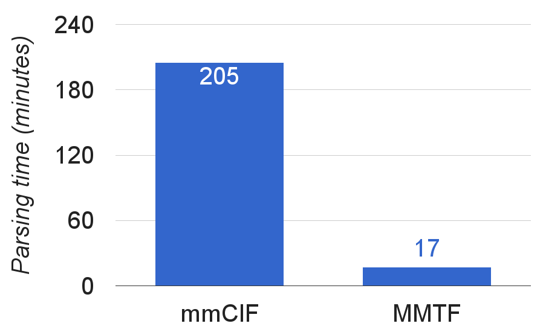

Loading...
Web-based
molecular graphics
for large complexes
Jose Duarte, Andreas Prlic, Peter Rose
Poster Fast Forward @ Web3D 2016
This is the molecular structure of the Zika virus capsid...
... it helps to understand how the virus infects cells...
... and aid in drug development.
Protein Data Bank
Gathering, annotating & serving macromolecular structures since 1971
- Structures can have millions of atoms
- Whole archive has over 1 billion
- Standard format is text-based, verbose
Speeding-up structure display
- Binary, compressed format: MMTF
- Memory efficient data model
- WebGL (based on three.js)
MacroMolecular
Transmission Format (MMTF)
Atomic coordinates, molecular topologies, metadata (no meshes)

Compression strategies:
- Dictionary encoding
- Run-length encoding
- Integer encoding
- Delta encoding ➠
- Integer packing
Improvement over mmCIF
File size

Parsing time

~120.000 structures/files, gzip compressed
on a 2.6 GHz Intel Core i5 using JavaScript
Memory efficient data model

Row-based:
ASN, 1, C |
GLY, 2, H |
PRO, 3, H |
VAL, 4, H
Column-based:
ASN, GLY, PRO, VAL |
1, 2, 3, 4 |
C, H, H, H
- Single TypedArray per property
- Parsed MMTF data can be copied in blocks
- Proxy objects for row-like access
HIV-1 capsid
hexameric subunit, 10800 atoms
HIV-1 capsid
216 hexameric and 12 pentameric subunit, ~2.4M unique atoms
Acknowledgements

-
RCSB PDB Team

-
NCI/NIH
(U01 CA198942)
Thank you for your attention!
- MMTF: http://mmtf.rcsb.org
- NGL Viewer: https://github.com/arose/ngl
- Twitter: @asrmoin